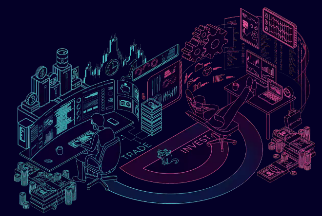

Transparent Asset Management
 - Image courtesy of GenesisVisionProblems with traditional Asset Management
Lack of trust is one of the main issues with traditional asset management. Investors normally lose control over their funds and rarely experience any transparency of their investment. Historical performance statistics are often faked to entice new investors into all sorts of ponzi and pyramid schemes. Since there are many issues with the current asset management industry there are many companies building better solutions for your investment using blockchain and smart-contracts. With the advancements in blockchain technology, asset management will be transparent and trustless.
Blockchain and smart-contracts
Blockchain is a public ledger that contains a tamper-proof and transparent history of their investment while removing the need for trust as funds move in-out based on a smart-contract. The smart-contract is written code that executes automatically without the need of a third-party authorization.
There are other ways to implement blockchain technology into third-party asset management platforms to give investors better transparency of their investment. One such solution would be to decentralize the trading history to prevent fraudulent historical performance statistics. An innovative fintech company by the name of Genesis Vision is exploring this concept as we speak. The trader's track record are being updated real-time and uploaded to IPFS for a decentralized storage that can't be tampered with. These track records are transparent, accurate, and tamper proof. The track records are built only from the live trades taken within their platform(witness) which means historical data can't be uploaded from a fraudulent third party.